01
Teamwork
Used to supporting cross-division operations, coordinating logistics, and communicating clearly in academic and organizational activities.
I'm Lintang Mukti Nugroho, a fresh graduate in Informatics and Computer Engineering Education from Universitas Sebelas Maret (UNS) with a GPA of 3.82/4.00. My interests and project experience span web development, machine learning, computer vision, and NLP. I enjoy turning practical problems into clear, usable digital products while continuously improving how I design, build, and evaluate software.
Used to supporting cross-division operations, coordinating logistics, and communicating clearly in academic and organizational activities.
Built database-driven applications with Laravel, PHP, JavaScript, MySQL, Tailwind CSS, Bootstrap, RESTful API patterns, and AJAX.
Worked with PyTorch on NLP and computer vision projects including multilingual SBERT scoring, OCR with CRNN, and MediaPipe hand tracking.

Selected academic and applied projects across AI, web development, and computer vision.
Indonesian essay scoring system using Multilingual SBERT and Hybrid Scoring, with fine-tuning and 5-fold cross-validation. The best model reached 94.70% accuracy and 0.947 F1-score.
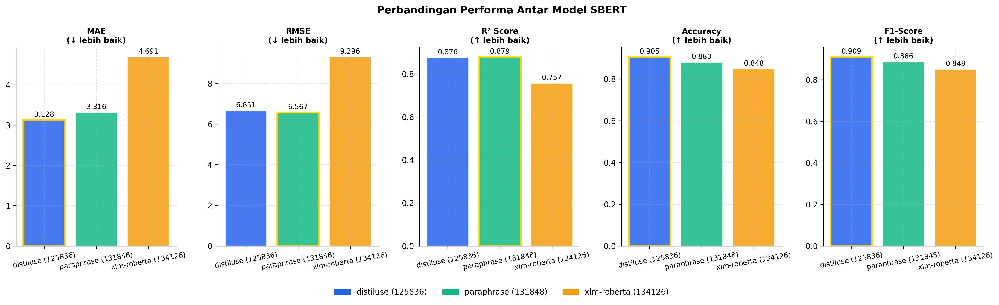
Image-based text recognition with PyTorch, image augmentation, and evaluation using Word Accuracy, CER, character-level F1-score, and confusion matrix.
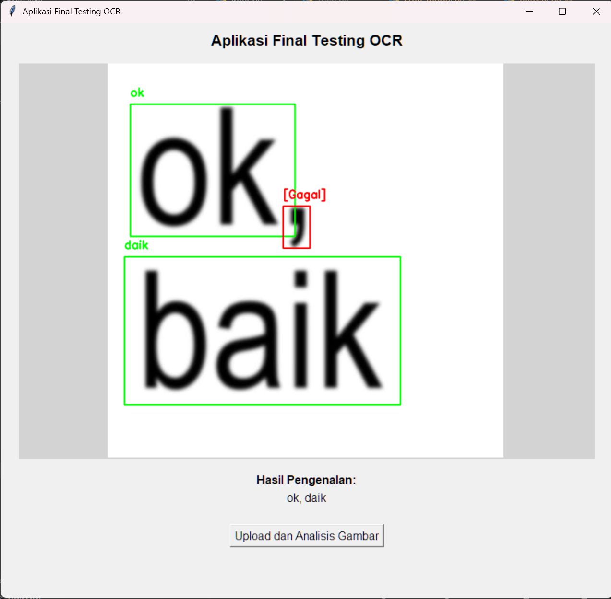
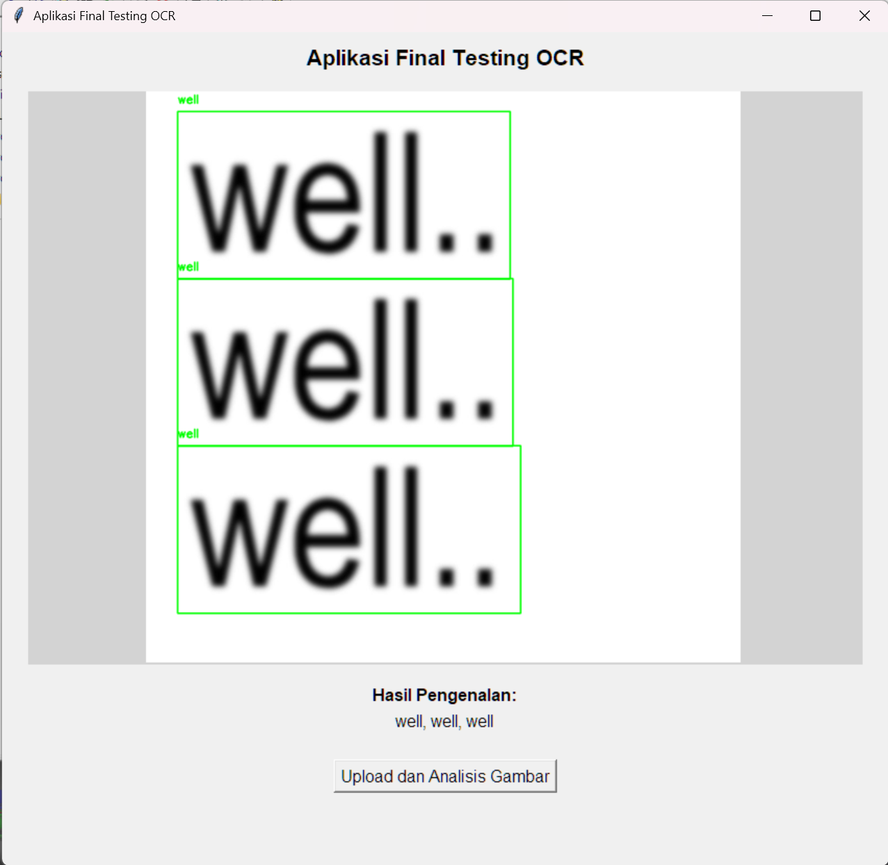
Real-time browser-based hand landmark tracking through a camera, developed using MediaPipe, HTML, and JavaScript.
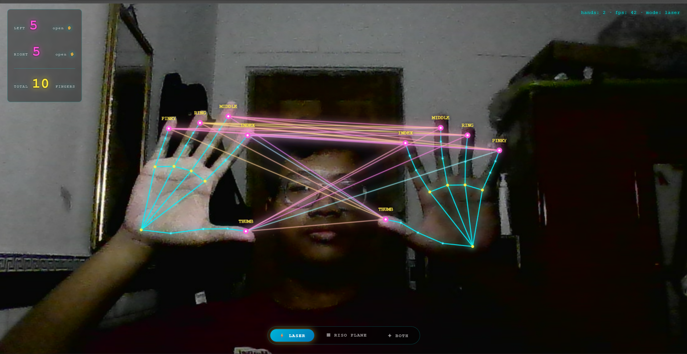
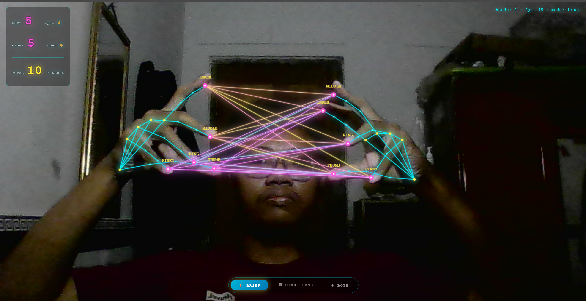
Laravel 11 inventory and equipment-loan system with separate admin and student portals for stock management, letter validation, and borrowing requests.
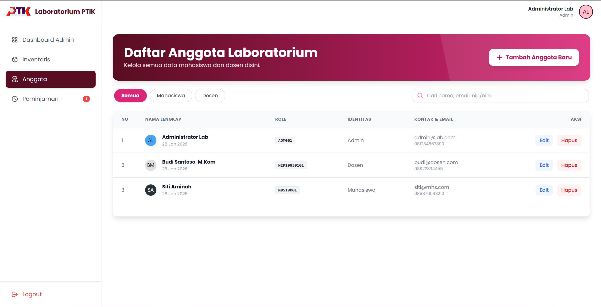
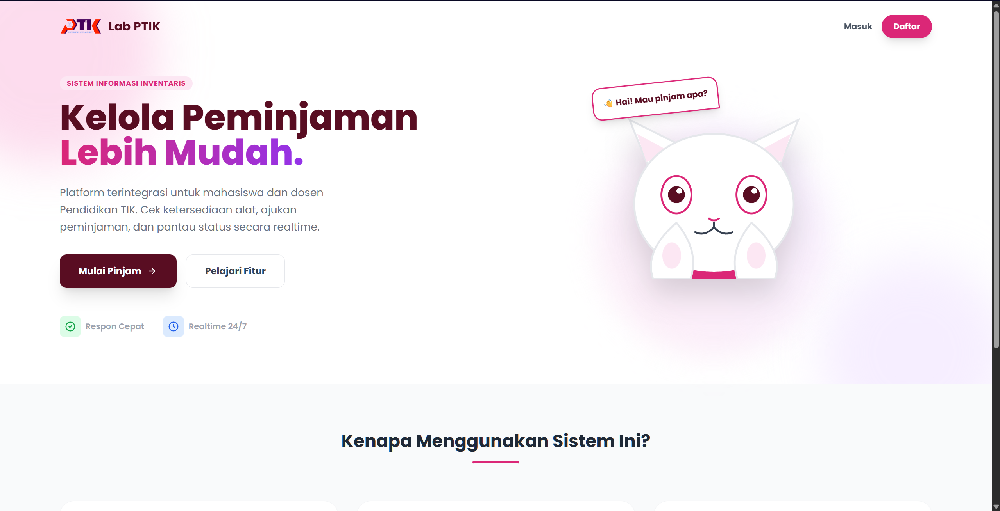
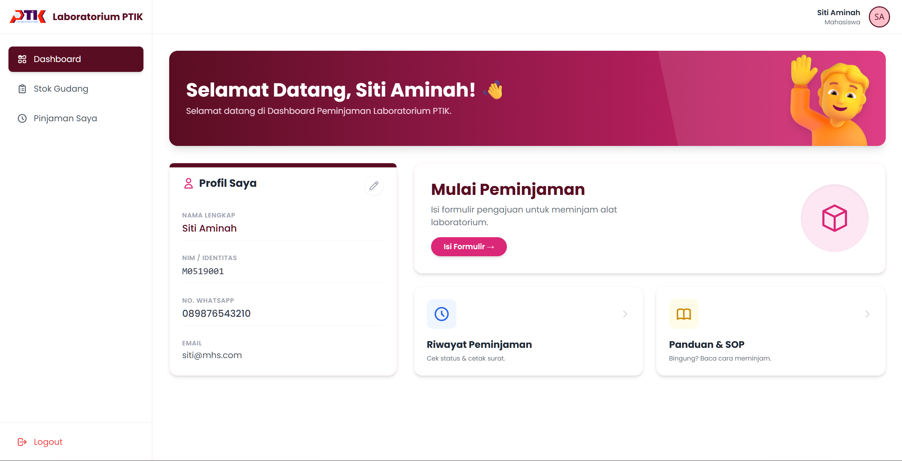
Online event-ticketing system with an admin dashboard for event management and sales visualization, plus user-facing event search and ordering.
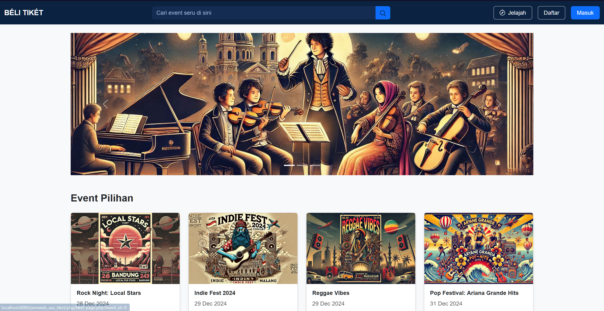
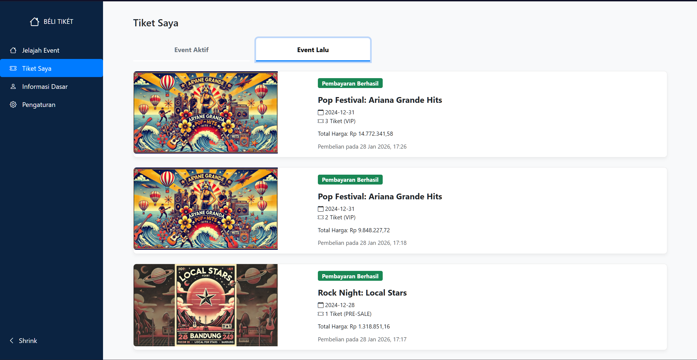
Profile and room-reservation website for a women's boarding house, including facilities, rules, booking form, and feedback monitoring.
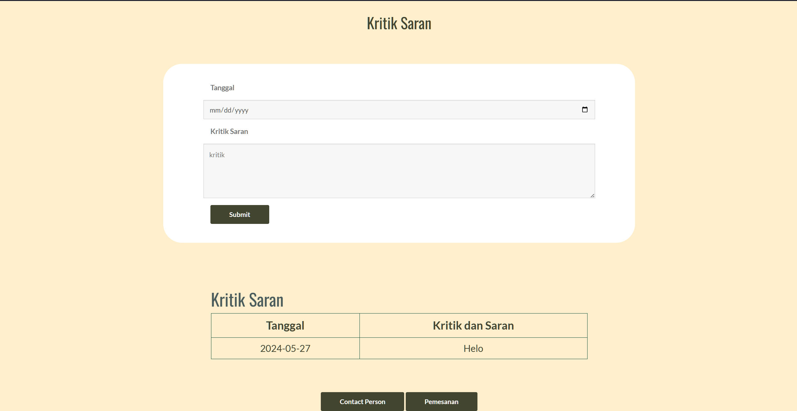
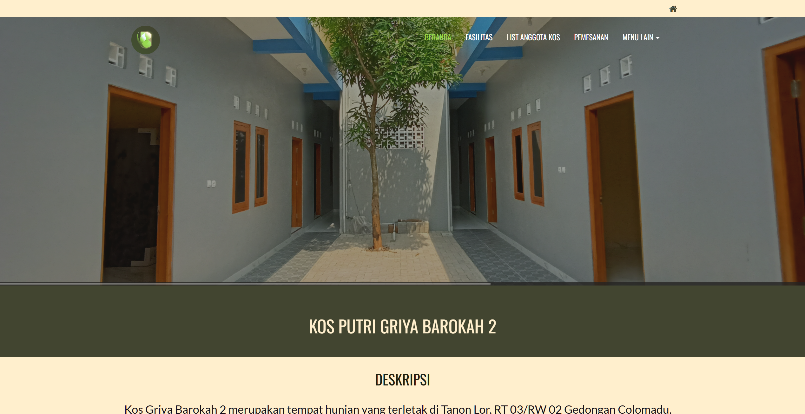
Learning project recreating the interface of Surakarta City Government's public-service portal using HTML, Bootstrap CSS, and JavaScript.
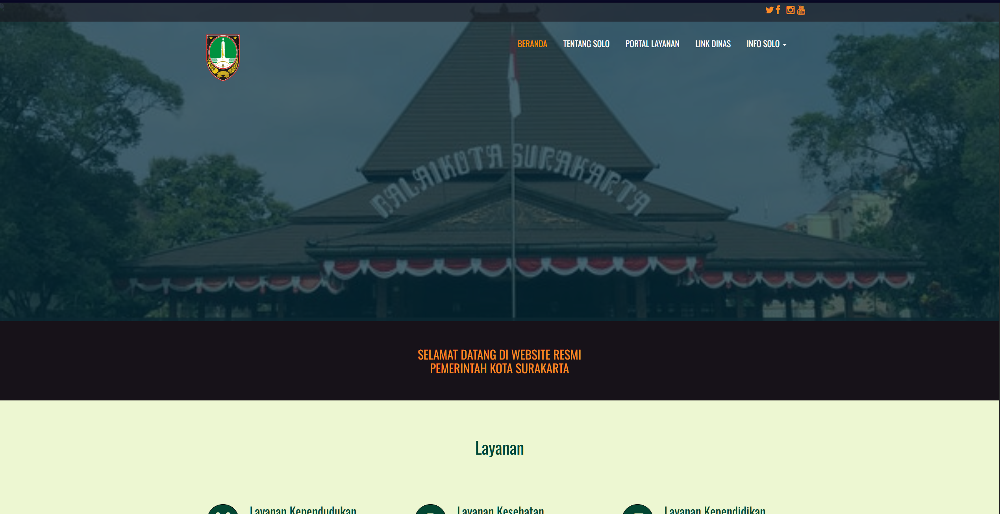
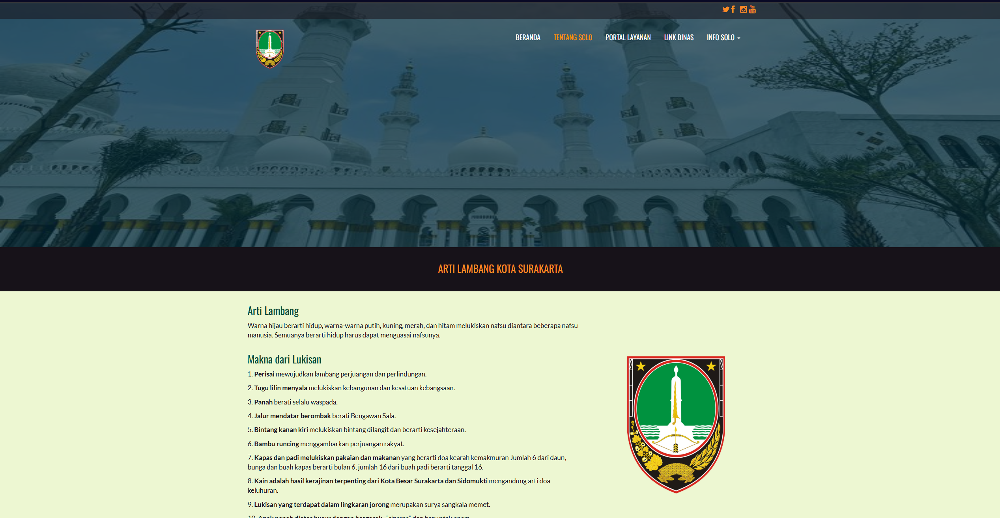
Laravel 11 inventory system for incoming/outgoing goods, procurement, QR-code identification, stock tracking, and automated Excel reporting.
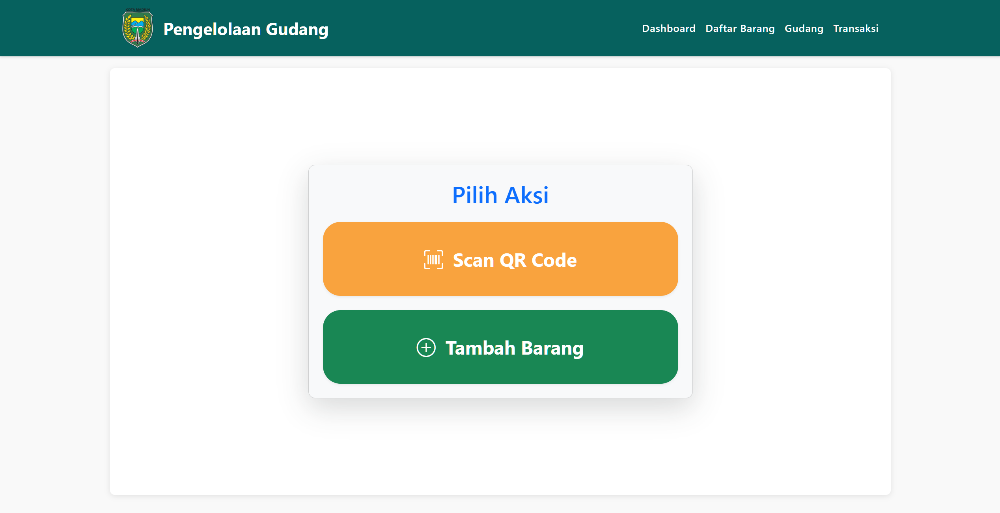
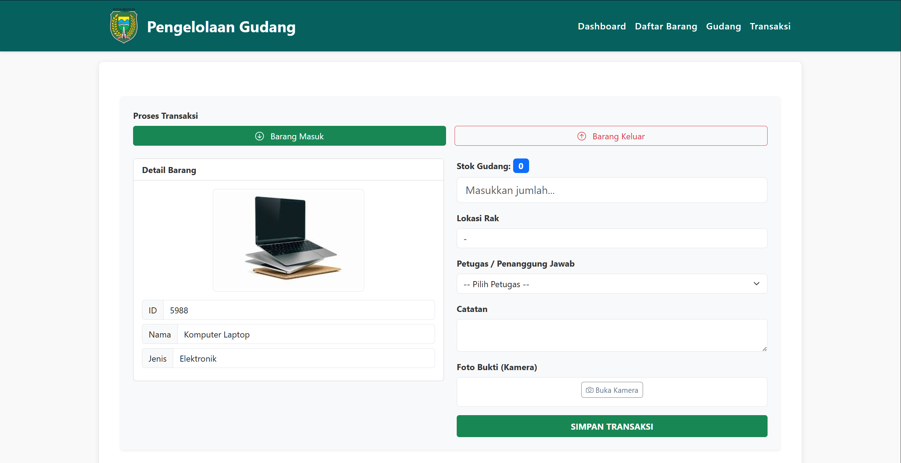
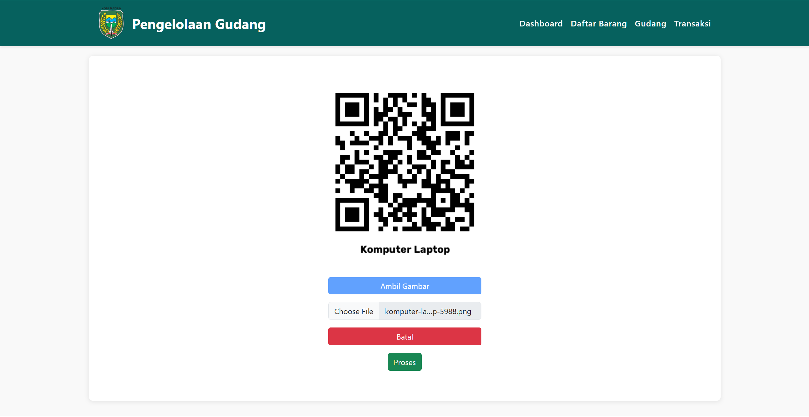
A timeline of hands-on experience — combining software development, teaching, and team operations.
Professional certification currently listed on my CV.
BNSP Certification
LSP Universitas Sebelas Maret · February 2026
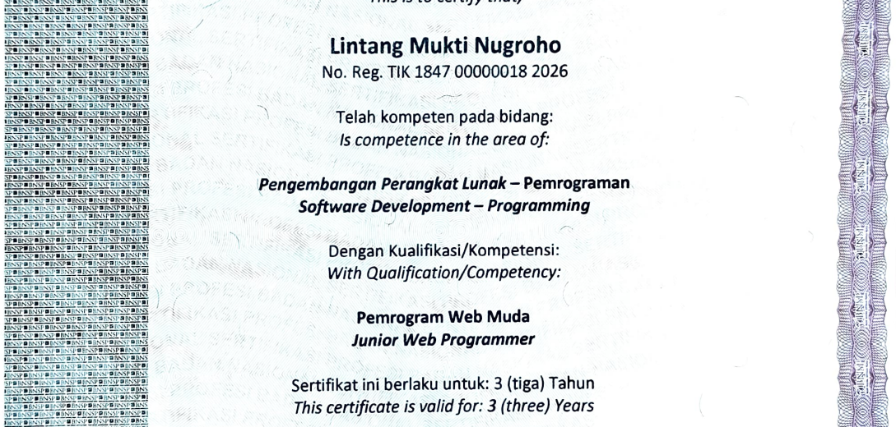
Available for opportunities
Have an opportunity, collaboration, or project in mind? I'm open to entry-level roles in web development, machine learning, computer vision, and software development.
Email or LinkedIn is the fastest way to contact me. You can also browse my repositories on GitHub.